Amendment #106 (S.O. 607(E), 1974)
28 changes: 6 to the First Schedule, 22 to the Second Schedule. 25 applied3 not applied
What it did to the ministries
- splitMinistry of Irrigation and Power splits into Ministry of Agriculture and Irrigation (10) and Ministry of Energy (7) change 1, 3, 6, 7, 8, 9 · histories: Irrigation & Power, Agriculture, Energy
- absorbedMinistry of Heavy Industry joins Ministry of Industry and Civil Supplies (39 → 56) change 4, 5, 16, 17 · histories: Heavy Industry, Industry
- moved6 subjects move from Ministry of Commerce to Ministry of Industry and Civil Supplies change 2, 5, 13, 16, 17 · histories: Commerce, Industry
- renamedMinistry of Agriculture is renamed Ministry of Agriculture and Irrigation change 1, 7, 8, 9, 10, 11 · histories: Agriculture
- renamedMinistry of Industrial Development is renamed Ministry of Industry and Civil Supplies change 5, 16, 17 · histories: Industry
The order, page by page
Page 1 of 20
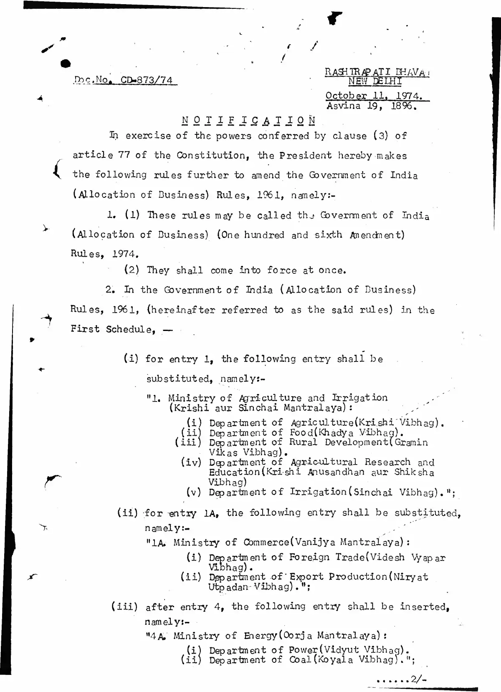
123Schedule 1 › entry 1
- 1. Ministry of Agriculture and Irrigation
- i. Department of Agriculture
- ii. Department of Food
- iii. Department of Rural Development
- iv. Department of Agricultural Research and Education
- v. Department of Irrigation
applied at schedule 1 › ministry 1 in the Rules after #106
Schedule 1 › entry 1A
- 1A. Ministry of Commerce
- i. Department of Foreign Trade
- ii. Department of Export Production
applied at schedule 1 › ministry 1A in the Rules after #106
after Schedule 1 › entry 4
- 4A. Ministry of Energy
- i. Department of Power
- ii. Department of Coal
applied at schedule 1 › ministry 4A in the Rules after #106
Page 2 of 20
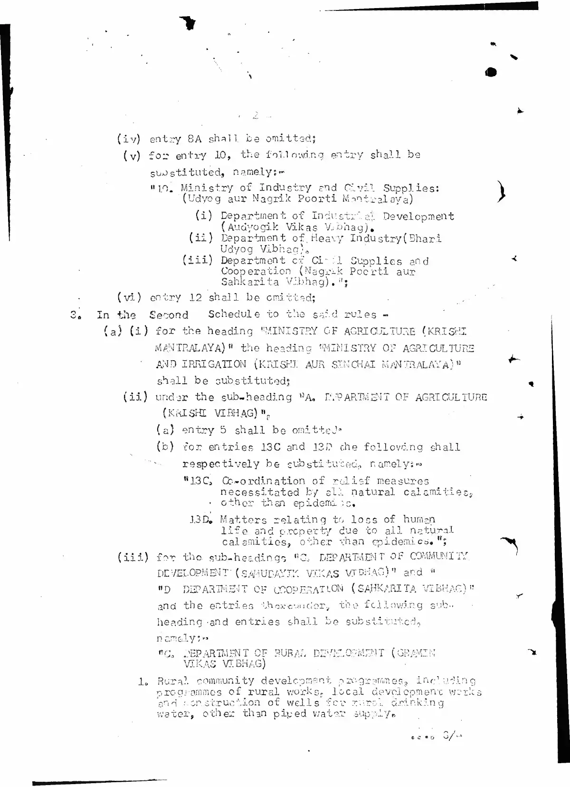
45678910Schedule 1 › entry 8A
applied at schedule 1 › ministry 8A in the Rules after #106
Schedule 1 › entry 10
- 10. Ministry of Industry and Civil Supplies:
- i. Department of Industrial Development Audyogik Vikas Vibhag)
- ii. Department of Heavy Industry
- iii. Department of Cil Supplies and Cooperation (Nagrik Poorti aur Sahkarita Vibhag). it
applied at schedule 1 › ministry 10 in the Rules after #106
Schedule 1 › entry 12
applied at schedule 1 › ministry 12 in the Rules after #106
Schedule 2 › MINISTRY OF AGRICULTURE
- MINISTRY OF AGRICULTURE AND IRRIGATION
applied at schedule 2 › ministry MINISTRY OF AGRICULTURE AND IRRIGATION in the Rules after #106
Schedule 2 › MINISTRY OF AGRICULTURE AND IRRIGATION › INPARTMENT OF AGRICULTURE › entry 5
applied at schedule 2 › ministry MINISTRY OF AGRICULTURE AND IRRIGATION › department A › part I › entry 5 in the Rules after #106
states inferred loose
Schedule 2 › MINISTRY OF AGRICULTURE AND IRRIGATION › INPARTMENT OF AGRICULTURE › entry 13C; Schedule 2 › MINISTRY OF AGRICULTURE AND IRRIGATION › INPARTMENT OF AGRICULTURE › entry 120
- >> #13C, Co-ordination of relief measures. necessitated by all natural calamities other than epidemic.
- 13D. Matters relating to loss of human life and property due to all natural calamities, other than epidemics.
not applied (the change could not be placed in the Rules as read; see How this document was read)
Schedule 2 › MINISTRY OF AGRICULTURE AND IRRIGATION › DEPARTMENT OF COMMUNITY. DEVELOPMENT; Schedule 2 › MINISTRY OF AGRICULTURE AND IRRIGATION › DEPARTMENT OF CCOPERATION
- C. DEPARTMENT OF RURAL DEVELOPMENT (GRAMIN 3 VIKAS VIBHAG)
- 1. Rural community development programmes, including programmes of rural works, local development works and construction of wells for rural drinking water, other than piped water supply 3
- 2. All matters relating to Panchayati Raj.
- 3. Hill areas development programme.
- 4. Drought prone areas development programme.
- 5. Tribal areas development programme.
and 4 more
- 6. Co-operation in agricultural sector, agricultural credit and indebtedness.
- 7. Agricultural markets, marketing and merchandising markets under the Agricultural Produce (Grading and Marking) Act, 1937.
- 8. Matters relating to the Directorate of Marketing and Inspection.
- 9. Insurance (Crop and Cattle Insurance).
applied at schedule 2 › ministry MINISTRY OF AGRICULTURE AND IRRIGATION › department C in the Rules after #106
read page break, states inferred loose
Page 3 of 20
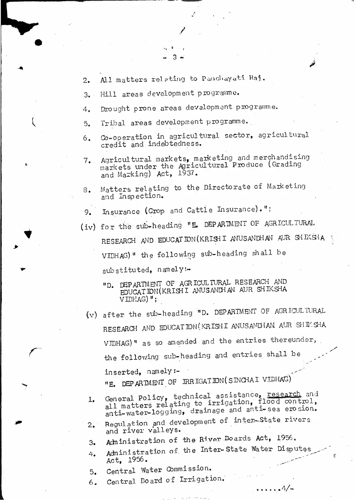
1112Schedule 2 › MINISTRY OF AGRICULTURE AND IRRIGATION › DEPARTMENT OF AGRICULTURAL RESEARCH AND EDUCATION
- D. DEPARTMENT OF AGRICULTURAL RESEARCH AND EDUCATION(KRISHI ANUSANDH AN AUR SHIKSHA VIDHAG)
applied at schedule 2 › ministry MINISTRY OF AGRICULTURE AND IRRIGATION › department D in the Rules after #106
after Schedule 2 › MINISTRY OF AGRICULTURE AND IRRIGATION › DEPARTMENT OF AGRICULTURAL RESEARCH AND EDUCATION
- E. DEPARTMENT OF IRRIGATION
- 1. General Policy, technical assistance, research and all matters relating to irrigation, flood control anti-water-logging, drainage and anti-sea ero sion.
- 2. Regulation and development of inter-State rivers and river valleys.
- 3. Administration of the River Boards Act, 1956.
- 4. Administration of the Inter-State Water Disputes Act, 1956.
- 5. Central Water Commission.
and 6 more
- 6. Central Board of Irrigation. 4/-
- 4. -7. Central Flood Contral Bojanik
- 8. Farraka Barrage Project.
- 9. Indus Water Treaty, 1960.
- 10. International Commissions and Conferences rolating to irrigation and flood control.
- 11. Irrigation and Flood Control Schemes in Union Territories.
applied at schedule 2 › ministry MINISTRY OF AGRICULTURE AND IRRIGATION › department E in the Rules after #106
read page break
Page 4 of 20
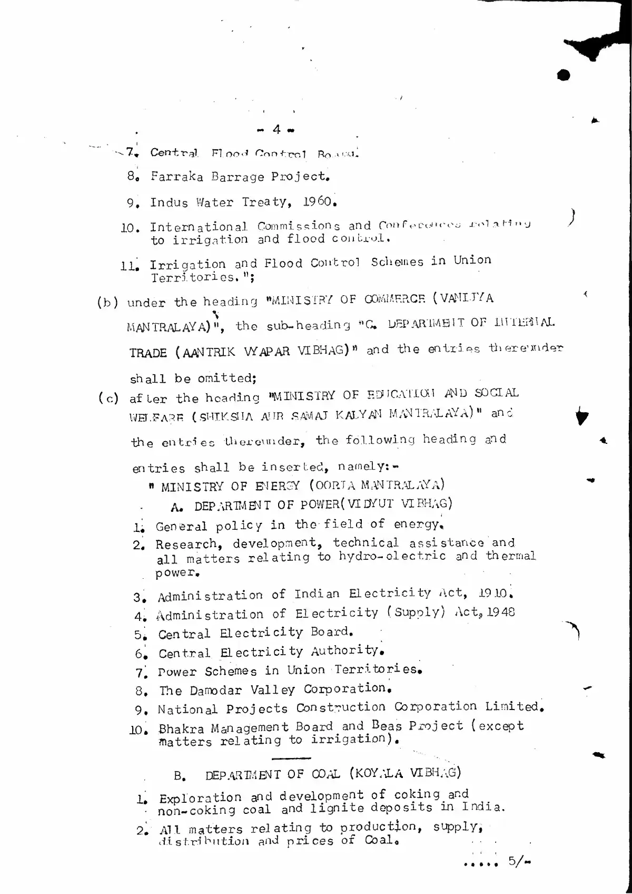
1314Schedule 2 › MINISTRY OF COMMERCE › DEPARTMENT OF INTERNAL TRADE
applied at schedule 2 › ministry MINISTRY OF COMMERCE › department C in the Rules after #106
after Schedule 2 › MINISTRY OF EDUCATION AND SOCIAL WELFARE
- › 109
- MINISTRY OF ENERGY (0ORJA MANTRALAYA)
- A. DEPARTMENT OF POWER(VI DYUT VI BHAG)
- 1. General policy in the field of energy.
- 2. Research, development, technical assistance and all matters relating to hydro-electric and thermal power.
- 3. Administration of Indian Electricity Act, 19.10.
and 15 more
- 4. Administration of Electricity (Supply) Act, 1948
- 5. Central Electricity Board.
- 6. Central Electricity Authority.
- 7. Power Schemes in Union Territories.
- 8. The Damodar Valley Corporation.
- 9. National Projects Construction Corporation Limited.
- 10. Bhakra Management Board and Beas Project (except matters relating to irrigation).
- B. DEPARTMENT OF COAL
- 1. Exploration and development of coking and non-coking coal and lignite deposits in India.
- 2. All matters relating to production, supply distribution and prices of Coal. 5/- !
- 3. Development and operation of coal washeries other than those for which the Department of Steel is responsible.
- 4. Low temperature carbonisation of coal and production of synthetic oil from coal.
- 5. Administration of the Coal Mines (Conservation and Development) Act, 1974.
- 6. Administration of the Coal Bearing Areas (Acquisition ( and Development) Act, 1957.
- 7. Public sector enterprises dealing with coal and lignite.
applied at schedule 2 › ministry MINISTRY OF ENERGY (0ORJA MANTRALAYA) in the Rules after #106
read page break
Page 5 of 20
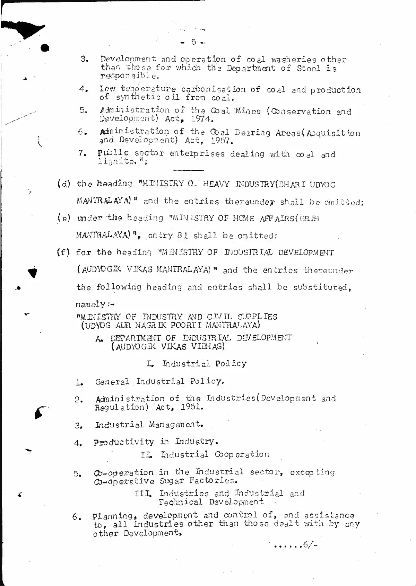
151617Schedule 2 › MINISTRY O. HEAVY INDUSTRY
applied at schedule 2 › ministry in the Rules after #106
states inferred loose
Schedule 2 › MINISTRY OF HOME AFFAIRS › entry 81
applied at schedule 2 › ministry MINISTRY OF HOME AFFAIRS › part I › group_heading The following subjects which are relatable to… in the Rules after #106
Schedule 2 › MINISTRY OF INDUSTRIAL DEVELOPMENT
- MINISTRY OF INDUSTRY AND CIVIL SUPPLIES
- A. DEPARTMENT OF INDUSTRIAL DEVELOPMENT (AUDYOGIK VIKAS VIDHAG)
- L. Industrial Policy
- 1. General Industrial Policy.
- 2. Administration of the Industries (Development and Regulation) Act, 1951. 3, Industrial Management.
- 4. Productivity in Industry. IL Industrial Cooperation
and 66 more
- 5. Co-operation in the Industrial sector, excepting Co-operative Sugar Factories. III Industries and Industrial and Technical Development
- 6. Planning, development and control of, and assistance to, all industries other than those dealt with by any other Development .....6/- 6
- 7. Administration of the Indian Poilers Act, 1923 and the regulations made thereunder, Central Boilers Bard
- 8. Explosives, administration of the Indian Explosives Act, 1884, and the rules made thereunder, but not the Explosive Substances Act, 1884.
- 9. Administration of the Petroleum Act, 1934, and the rules made thereunder }
- 10. Cables.
- 11. Light Engineering Industries (e.g., Sewing machines. typewriters, weighing machines, bicycles, etc.).
- 12. Optical Glass Project.
- 13. Light Industries (e.g., Plywood, stationery, matches cigarettes, etc.).
- 14. Light Electrical Engineering Industries.
- 15. Raw films..
- 16. Hard Board.
- 17. Paper and newsprint.
- 18. Tyres and Tubes.
- 19. Salt.
- 20. Cement
- 21. Technical Development, including Directorate General of Technical Development.
- IV. Small Scale Industries
- 22. Chwordination of the development of small-scale Industries - i Small Scale Industries Board. ii National Small Industries Comoration Limited.
- iii. Setting up of new industries, for providing employment, in places where there are heavy concentrations of displaced persons from West Pakistan.
- 28. Coordination of matters relating to Rural Industrialisation.
- V. Patents and Designs, etc
- 24. Standardisation of international products and raw materials; the Indian Standards Institution (Certification Marks) Act, 1952.
- 25. Designs Act. 1911
- 26. Patents Act, 1970. 7/-- 7
- VI. Materials Planning
- 27. Coordinated assessment of demands for raw materials by sectors, industries and large units, in relation to particular groups of products and to available capacities.
- 28. Assessment of domestic availability of raw materials with due regard to the feasibility of import substitution.
- 29. Assessment of requirements of imports of raw materials with due allowance for inventories.
- 30. Determination of principles, priorities and procedures for allocation of raw materials.
- 31. Coir Industry.
- 32. Sericulture.
- 33. The National Textile Corporation Limited.
- 34. The Coir Board and Silk Board.
- 35. Any other matters connected with materials planning.
- VII. Village Industries
- 36. Co-ordination and development of Village Industries including Khadi.
- 37. Ambar Charkha.
- VIII. Other subjects
- 38. All attached or subordinate offices or other organisations concerned with any of the subjects specified in this list.
- 39. Public sector projects falling under the subjects included in this list except such projects as, are specifically allotted to any other Department.
- 40. Co-ordination of matters of general policy of nonfinancial nature affecting all public sector industrial and commercial undertakings.
- B. DEPARTMENT OF HEAVY INDUSTRY (BHARI UDYOG VI BHAG)
- 1. Manufacture of heavy engineering equipment for all industries.
- 2. Heavy electrical engineering industries.
- 3. Machinery Industries including Machine Tools and Steel manufactures.
- 4. Auto Industries, including tractors, earth moving equipment and diesel engines. 8/- -3-
- 5. Public sector projects falling under the subjects included in this list, including (1) The Heavy Enginearing Comoration Limited Ranchi.
- i. The Mining and Allied Machinery Corporation Limited, Durgapur. (11) The Triven Structurals Limited, Allahabad.
- iv. The Tungabhadra Son Products Limited. The Bharat Heavy Pinces and Vessels Limited.
- vi. The Phgineering Projects (India) Limited. G DIARINET OF CIVIL SUPPLIES AND (TOP NATIO (NARIK POORTI AUR SANKARITA VIBHAG)
- I. Internal Trade.
- 1. Internal Trade.
- 2. Inter-State Trade; the Spirituous Preparations (Inter-State Trade and Commerce) Control Act, 1955.
- 3. Control of futures trading (The Forward Contracts 1 (Regulation) Act, 1952).
- 4. The Essential Commodities Act, 1955 (Supply, prices and distribution of essential commodities not dealt with specifically by any other Ministry).
- II. Trade Marks, etc.
- 5. The Trade and Merchandise marks Act, 1958. 6, The Emblems and Names (Prevention of Improper Use Act, 1950 7 Standards of Weights and Measures (The Standards of Weights and Measures Act, 1956).
- 8. All attached or subordinate offices or other organisation concerned with any of the subjects specified in this list including the Forward Markets Commission, Bombay.
- III. Co-operation 91 General policy in the field of Co-operation and 94 co-ordination of co-operation activities in all sectors (The Ministries concemed are responsible for Co-operatives in their respective fields).
- 10. Matters relating to National Co-operative Organisations.
- 11. National Co-operative Development Corporation.
- 12. Incorporation, regulation and winding up of cooperative societies with objects not confined to one State.
- 13. Training of personnel of co-operative departments and co-operative institutions (including education of members, office bearers and non-officials).
- 14. Consumer co-operatives.
- 15. Public co-operation.
applied at schedule 2 › ministry MINISTRY OF INDUSTRIAL DEVELOPMENT in the Rules after #106
read page break
Page 6 of 20
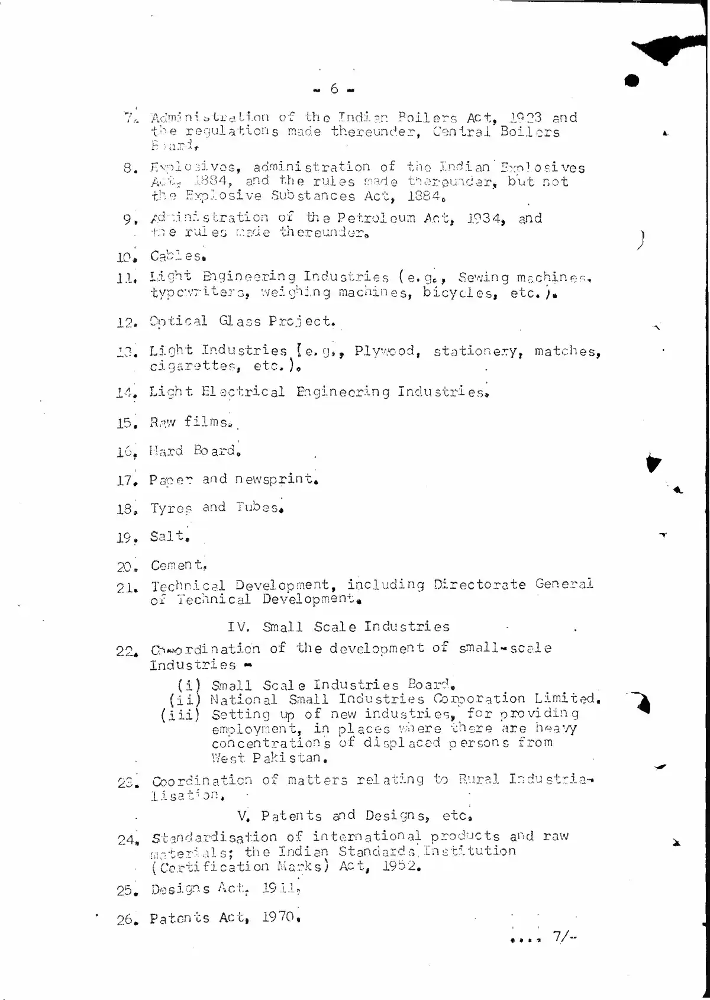
Page 7 of 20
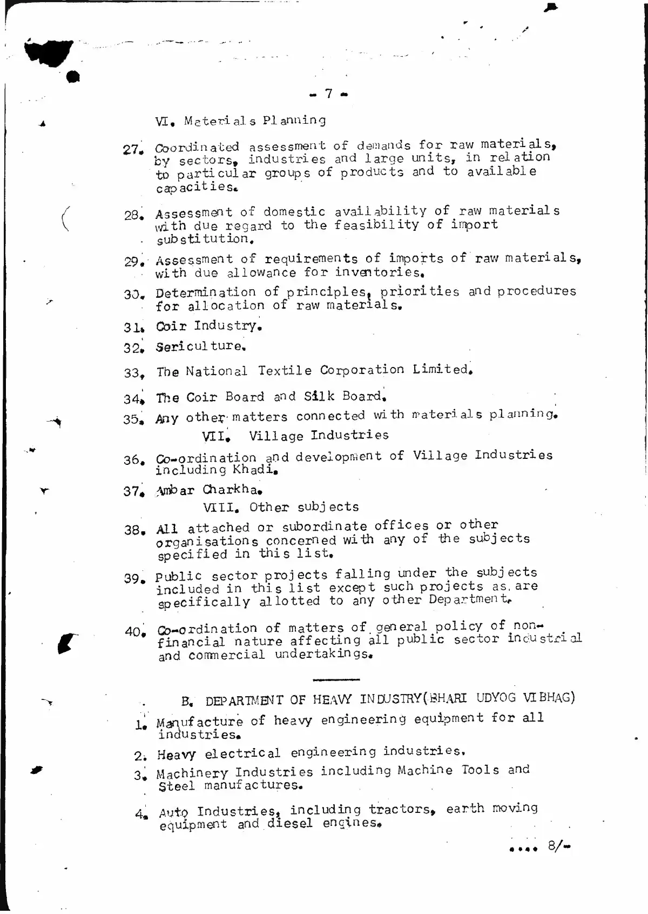
Page 8 of 20
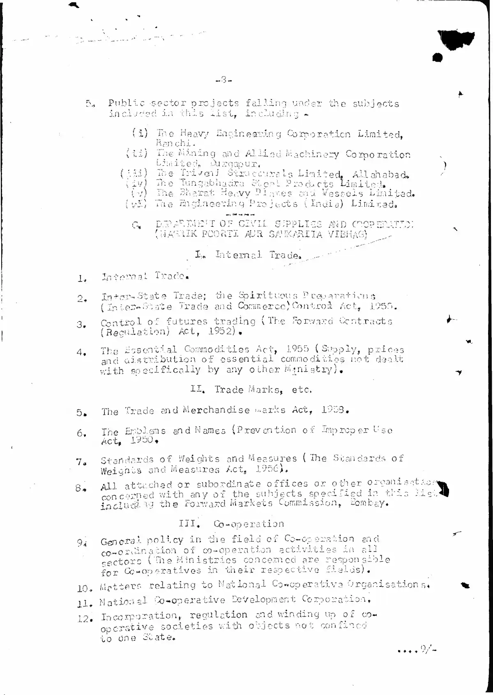
Page 9 of 20
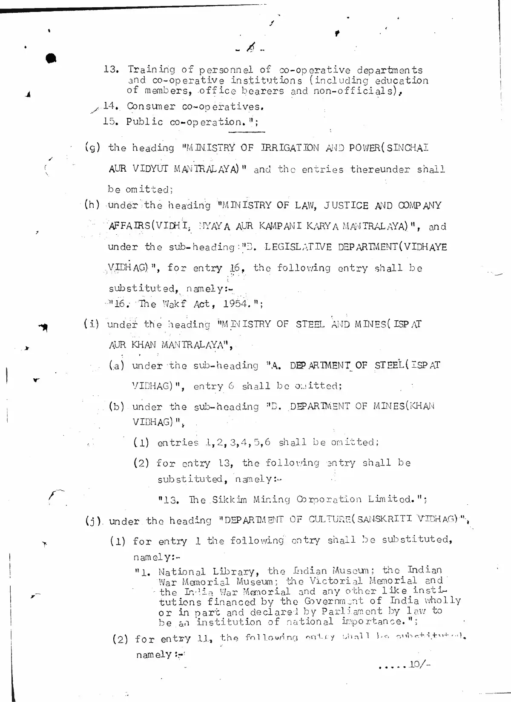
18192021222324Schedule 2 › MINISTRY OF IRRIGATION AND POWER
applied at schedule 2 › ministry in the Rules after #106
Schedule 2 › MINISTRY OF LAW, JUSTICE AND COMPANY AFFAIRS › LEGISLATIVE DEPARTMENT › entry 16
- 16. The Wakf Act, 1954.
applied at schedule 2 › ministry MINISTRY OF LAW. JUSTICE AND COMPANY AFFAIRS › department B › group_heading The following… in the Rules after #106
Schedule 2 › MINISTRY OF STEEL AND MINES › DEPARTMENT OF STEEL › entry 6
applied at schedule 2 › ministry MINISTRY OF STEEL AND MINES › department A › entry 6 in the Rules after #106
Schedule 2 › MINISTRY OF STEEL AND MINES › DEPARTMENT OF MINES › entry 1; Schedule 2 › MINISTRY OF STEEL AND MINES › DEPARTMENT OF MINES › entry 6; Schedule 2 › MINISTRY OF STEEL AND MINES › DEPARTMENT OF MINES › entry 6; Schedule 2 › MINISTRY OF STEEL AND MINES › DEPARTMENT OF MINES › entry 6; Schedule 2 › MINISTRY OF STEEL AND MINES › DEPARTMENT OF MINES › entry 6; Schedule 2 › MINISTRY OF STEEL AND MINES › DEPARTMENT OF MINES › entry 6
applied at schedule 2 › ministry MINISTRY OF STEEL AND MINES › department B › entry 1 in the Rules after #106
Schedule 2 › MINISTRY OF STEEL AND MINES › DEPARTMENT OF MINES › entry 13
- 13. The Sikkim Mining Corporation Limited.
applied at schedule 2 › ministry MINISTRY OF STEEL AND MINES › department B › entry 13 in the Rules after #106
Schedule 2 › DEPARTMENT OF CULTURE › entry 1
- 1. National Library, the Indian Museum; the Indian War Memorial Museum; the Victorial Memorial and the India War Memorial and any other like institutions financed by the Government of India wholly or in part and declared by Parliament by law to be an institution of national importance.
applied at schedule 2 › department DEPARTMENT OF CULTURE › entry 1 in the Rules after #106
Schedule 2 › DEPARTMENT OF CULTURE › entry 11
- 11. The Central Secretariat Library; Central Reference Library, Calcutta; Raza Library, Rampur; Delhi Public Library%; India Office Library; National Museum, New Delhi; Salar Jung Museum and Library Hyderabad; Khudabux Oriental Public Library; Nehru Memorial Museum and Library; Gandhi Darshan Samiti…
applied at schedule 2 › department DEPARTMENT OF CULTURE › entry 11 in the Rules after #106
Page 10 of 20
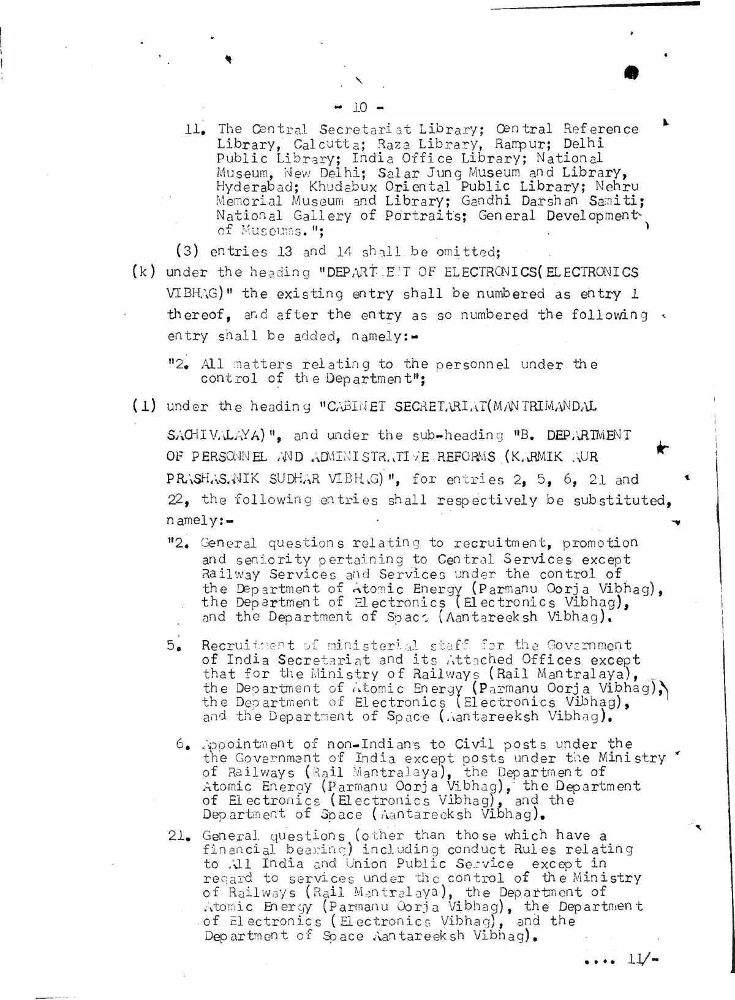
25262728Schedule 2 › DEPARTMENT OF CULTURE › entry 13; Schedule 2 › DEPARTMENT OF CULTURE › entry 14
applied at schedule 2 › department DEPARTMENT OF CULTURE › entry 13 in the Rules after #106
Schedule 2 › DEPARTIET OF ELECTRONICS › entry 1
renumbered as 1
not applied (the change could not be placed in the Rules as read; see How this document was read)
after Schedule 2 › DEPARTIET OF ELECTRONICS › entry 1
- 2. All matters relating to the personnel under the control of the Department
not applied (the change could not be placed in the Rules as read; see How this document was read)
Schedule 2 › CABINET SECRETARIAT › DEPARTMENT OF PERSONNEL AND ADMINISTRATIVE REFORMS › entry 2; Schedule 2 › CABINET SECRETARIAT › DEPARTMENT OF PERSONNEL AND ADMINISTRATIVE REFORMS › entry 5; Schedule 2 › CABINET SECRETARIAT › DEPARTMENT OF PERSONNEL AND ADMINISTRATIVE REFORMS › entry 6; Schedule 2 › CABINET SECRETARIAT › DEPARTMENT OF PERSONNEL AND ADMINISTRATIVE REFORMS › entry 21; Schedule 2 › CABINET SECRETARIAT › DEPARTMENT OF PERSONNEL AND ADMINISTRATIVE REFORMS › entry 22
- 2. General questions relating to recruitment, promotion and seniority pertaining to Central Services except Railway Services and Services under the control of the Department of Atomic Energy (Parmanu Oorja Vibhag) the Department of Electronics (Electronics Vibhag) and the Department of Space…
- 5. Recruitment of ministerial staff for the Government of India Secretariat and its Attached Offices except that for the Ministry of Railways (Rail Mantralaya) the Department of Atomic Energy (Parmanu Oorja Vibhag) the Department of Electronics (Electronics Vibhag) and the Department of Space…
- 6. Appointment of non-Indians to Civil posts under the the Government of India except posts under the Ministry of Railways (Rail Mantralaya), the Department of Atomic Energy (Parmanu Oorja Vibhag), the Department of Electronics (Electronics Vibhag), and the Department of Space (Mantareeksh Vibhag).
- 21. General questions (other than those which have a financial bearing) including conduct Rules relating to All India and Union Public Service except in regard to services under the control of the Ministry of Railways (Rail Mantralaya), the Department of Atomic Energy (Parmanu Oorja Vibhag), the…
- 22. Conditions of service of Central Government employees Zexcluding those under the control of the Ministry of Railways (Rail Mantralaya), the Department of Atomic Energy (Parmanu Oorja Vibhag) the Department of Electronics (Electronics Vibhag) and the Department of Space (Antareeksh Vibhag) other…
applied at schedule 2 › ministry CABINET SECRETARIAT › department B › group_heading I › entry 2 in the Rules after #106
read page break
Page 11 of 20
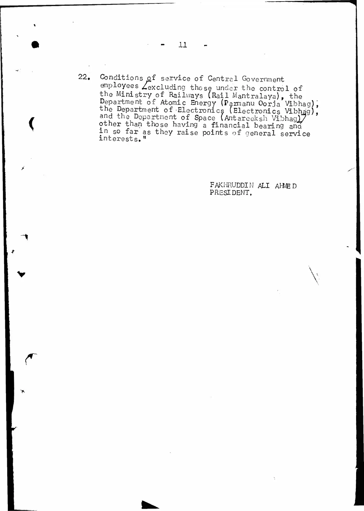
Page 12 of 20
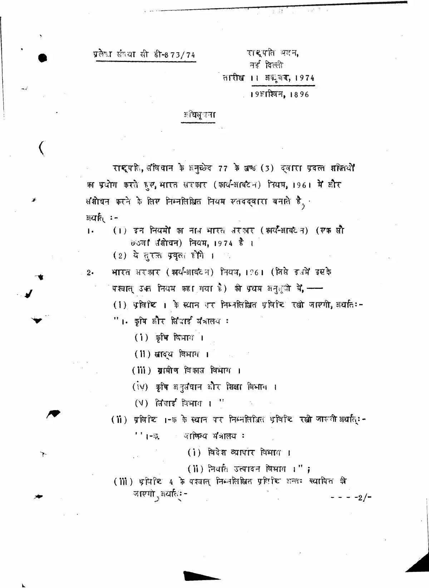
Page 13 of 20
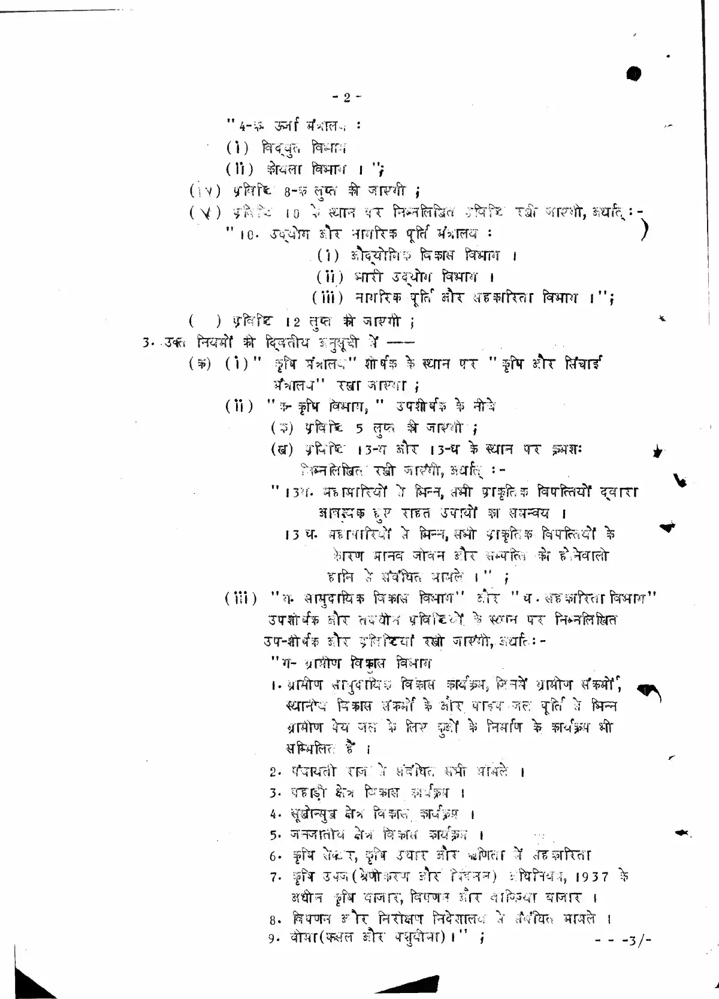
Page 14 of 20
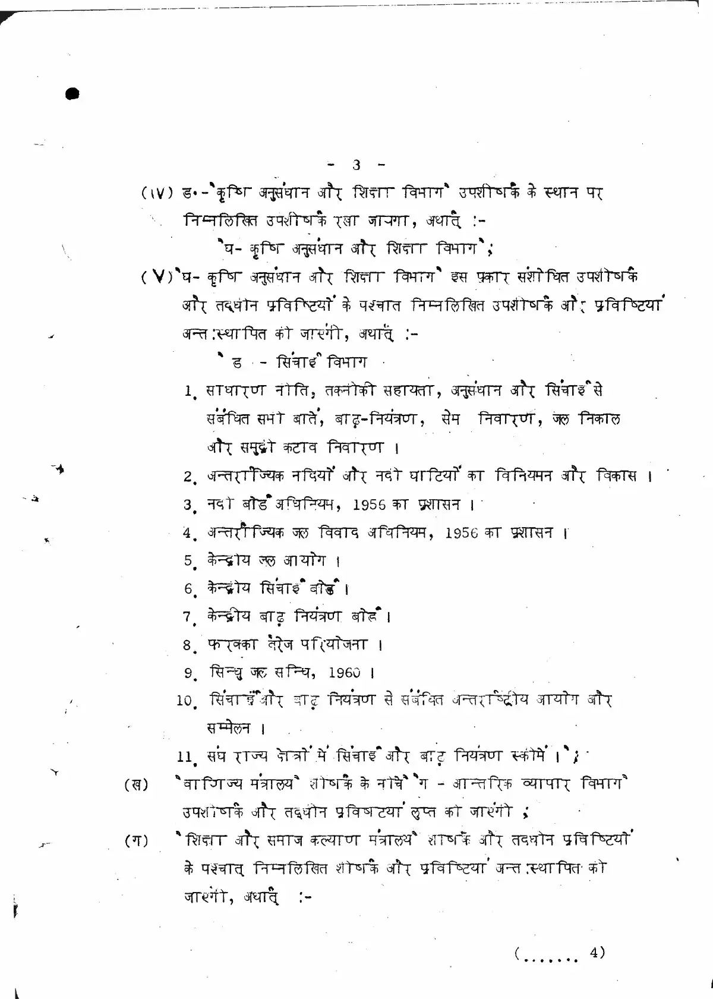
Page 15 of 20
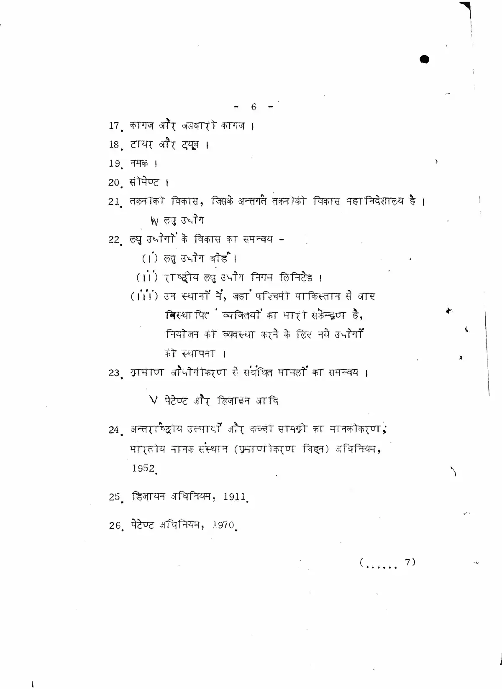
Page 16 of 20
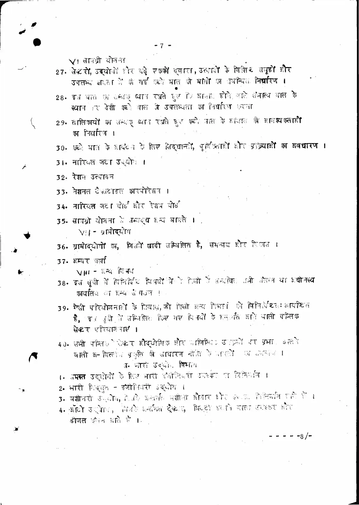
Page 17 of 20
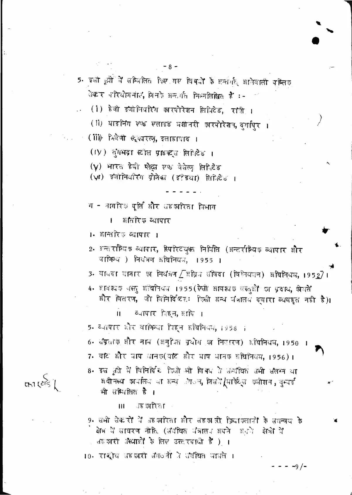
Page 18 of 20
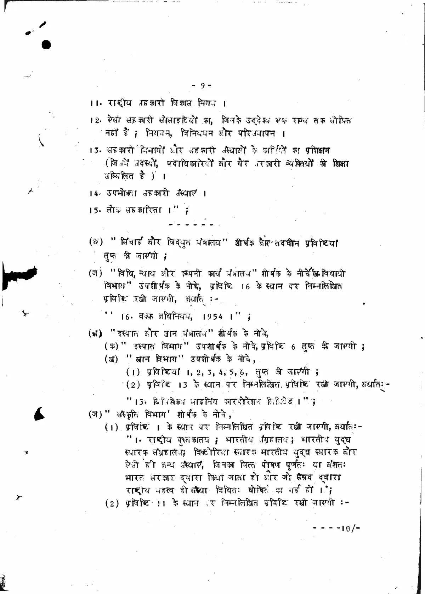
Page 19 of 20
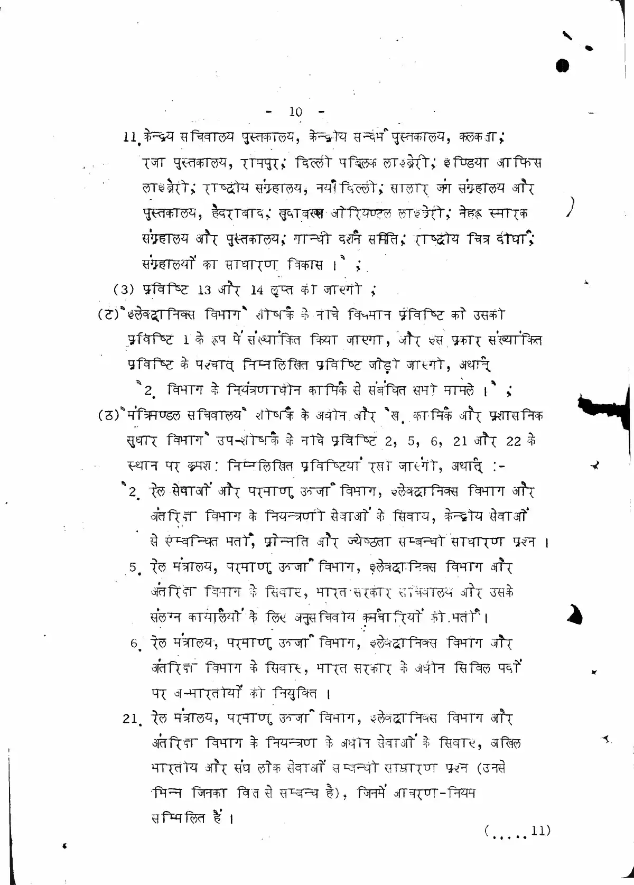
Page 20 of 20
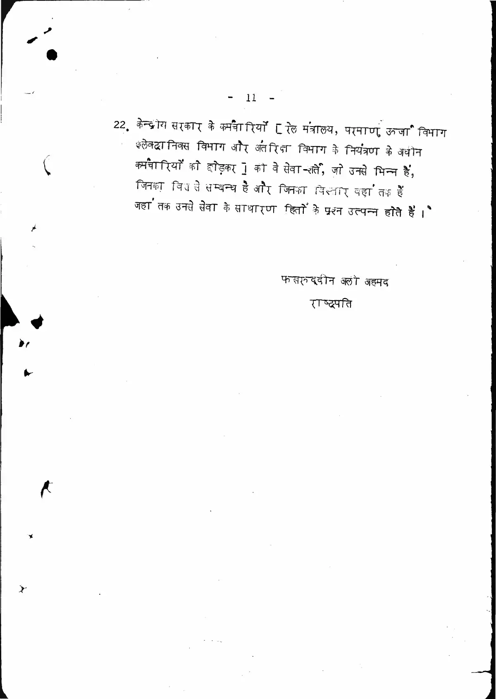
How this document was read
Edits to the reading
| Date | By | Edit | Before → after |
|---|---|---|---|
| 12 November 2026 | claude | word corrected |
Changes placed by an inference rule
| Change | Rule | Status | What |
|---|---|---|---|
| 8 | loose | accepted | change 8: department INPARTMENT OF AGRICULTURE taken for department DEPARTMENT OF AGRICULTURE, named loosely |
| 10 | loose | accepted | change 10: department DEPARTMENT OF CCOPERATION taken for department DEPARTMENT OF COOPERATION, named loosely |
| 15 | loose | accepted | change 15: ministry MINISTRY O. HEAVY INDUSTRY taken for ministry MINISTRY OF HEAVY INDUSTRY, named loosely |
Known issues
| Change | Issue | Known as |
|---|---|---|
| 9 | change 9: no entry 13C under schedule 2 › ministry MINISTRY OF AGRICULTURE AND IRRIGATION › department A | Agriculture's departments |
| 26 | change 26: no entry 1 under schedule 2 › department DEPARTMENT OF ELECTRONICS | Departments of the top level not in the Second Schedule |
| 27 | change 27: no entry 1 under schedule 2 › department DEPARTMENT OF ELECTRONICS | Departments of the top level not in the Second Schedule |
From the Government of India (Allocation of Business) Rules, 1961 and their amendments, as published by the Cabinet Secretariat (cabsec.gov.in), read by orgpedia. The readings of the older scanned gazettes have known gaps.